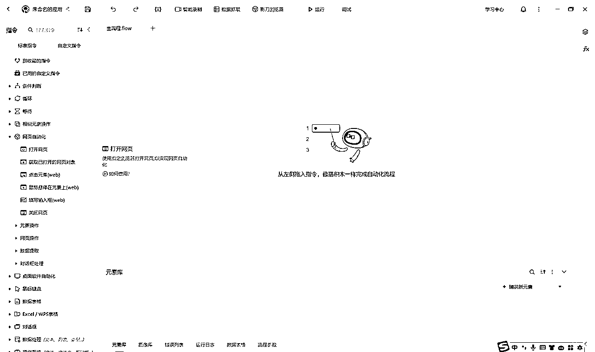
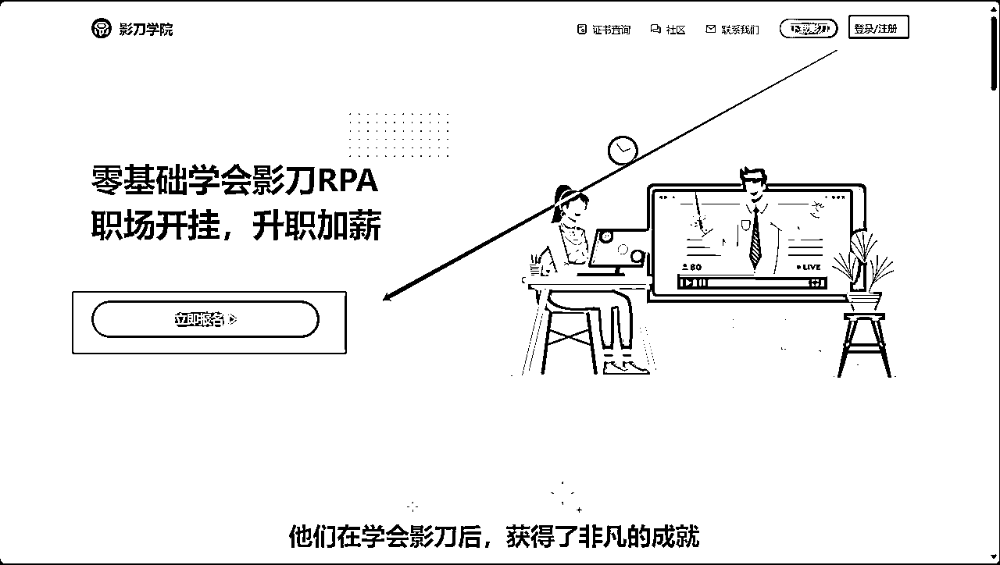
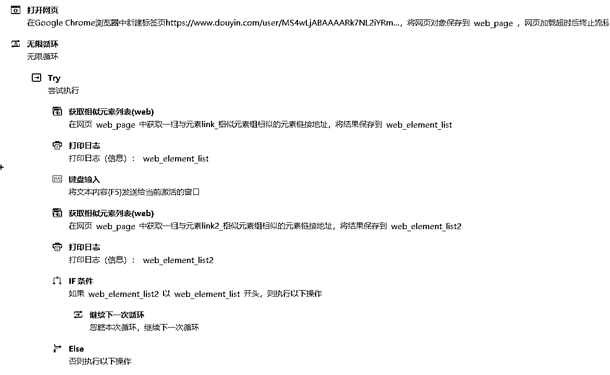

来源：https://ktuszl372b.feishu.cn/docx/BgxOdsgqNom98UxMctVcJHbunrb
大家好呀~我是Leeka，影刀认证的优秀工程师、Uibot认证的工程师，很荣幸成为8月抖音图文的教练。
在其他教练都在疯狂输出抖音图文的相关经验的时候，我另辟蹊径，想要跟大家聊点别的。因为最近在一些群里，看到有些船员说，一个账号每天都要发 10 篇图文，手上还有好几个账号，觉得太累了，问是不是有什么好办法。
我在修图、剪辑到怀疑人生的时候，也一直在想这个事情，既然我现在做的步骤都是一致的，我是不是可以借助外力让自己省点力呢？
作为一位不懂代码的且尝试过让 GPT 教我用 Java 写软件但无果的普通人来说，emmm，整软件这条路走不动，我又不想斥巨资（bushi）去采购这些软件的话，我能怎么办呢？
因为加入了生财，最开始知道 RPA 是在一年前，但是只知道这个是好东西，具体是做什么的，以及怎么做，完全没有头绪，就觉得这玩意儿也太神秘了吧？随着自己的认知不断提高，我终于知道 RPA 是啥，且 6 月续航时，跟同组的其他志愿者一起比赛学习 RPA。
RPA 是 Robotic Process Automation 的缩写，直译过来就是“机器人流程自动化”。
简单点理解就是，将我们日常重复的有逻辑性的类机器人工作，交给真正的机器人去操作。
让我们自己腾出更多时间去思考，如何优化自己的项目以及相关的细节。
为什么是 RPA 而不是其他传统的自动化工具？
其他的主要我也不会（bushi）。相对而言，RPA 不需要复杂的编程知识，所以准入门槛不高。
其次 RPA 可以通过我们预先设定好的程序，由机器人模拟真人操作电脑，实现流程自动化，减少人为失误和节约时间。
最后 RPA 也不需要改造系统啥的，装个软件就能开干了。
先上结论：用心学，真的不难。选择最简单的RPA工具，让自己的正反馈来得更快一些。
市面上的 RPA 软件选择还挺多的，但国内最知名的应该是影刀，影刀确实也真的做到他自己说的【搭积木】的设计。截个图给你们感受一下。
贴心奉上官网地址：https://www.yingdao.com/
左边的菜单栏就是，常用的指令，都是中文。

想要系统学习影刀RPA的话，建议可以进入影刀学院学习，讲得非常细致，还有课后作业，帮助大家检查一下自己是否真的学会了，可以说是非常人性化了。网址是：https://college.yingdao.com/
把影刀初级工程师的认证拿到后，基本项目上涉及到的机器人，都可以自己动手整一个了。

很多人刚接触RPA，并不觉得这机器人能多有多厉害，接下来我将通过一些案例来告诉你，我们如何能应用RPA机器人做好抖音图文这个项目。
前面已经说过，RPA的适用场景是重复的、有逻辑性的工作，譬如我们批量修图、批量剪辑、批量定时发布等等，其实都可以通过RPA来提升效率，尤其是如果我们自己一个人操作矩阵，更是刚需。但我今天并不想讲这么基础的，我想讲点有意思的，更适合大家用的。
坤哥在开船时的直播，后劲很大，我至今依旧记得他说的朋友公司的宝妈非常拼，跟款很快，几乎不睡觉，靠着一股拼劲赚了几十万。结合RPA，我就在想，既然我们精力上拼不过宝妈的话，是不是可以造个不需要休息的跟款机器人呢？
机器人运行的逻辑是很清晰的（重复的、有逻辑的）：
1、找到对标的用户，不断刷新页面，看是不是有新作品发布；
2、如果发现有新发布的作品，及时抓图，没有的话就继续刷新；
3、抓下来的图，及时用工具修图；
4、抓取博主的新作品的标题、正文，润色一下，一键发布作品。
虽然我不是宝妈，但我能设计一款比宝妈还要拼的机器人啊哈哈哈。（此处应该有拍一拍，表示非常认同，哈哈哈）
坤哥在直播的时候也说过，我们想要跟款跟得快跟得准，首先得确定自己找到的博主就是源头发布的人。
否则如果我们跟到的是二级三级甚至是 N 级代理的话，那么即便我们跟款再快，对出单的帮助也非常有限的。
这个具体要如何找到源头博主呢？这个没有什么捷径，只能多刷，用以图找图，来确认市面上有多少人已经发布了这个款，从而倒推出这个博主是不是代理。
码稿的时候突然来了灵感，那就顺便写一写机器人，捋一捋思路。
整个逻辑很清晰：
1、打开对标的博主抖音主页
2、先抓取她目前主页上的所有笔记超链接（定义为web_element_list）
3、不断刷新她的主页，记录她的所有笔记超链接（定义为web_element_list2）
4、通过比对web_element_list和web_element_list2是否不同，从而判断是否有新的笔记
5、如果有新的笔记，就把新的图文笔记的图存下来，文字保留下来（给后续发布自己作品准备基础素材）
温馨提醒：一定要用笔记的网址比对，如果直接用图片地址比对，就会出错，因为图片地址每次刷新都会变
同理，其他平台如小红书等的跟款，也是同样的逻辑。
整理成影刀软件的代码组是长这样的
贴心提醒：因为无限循环时间长，所以可能会出现各种问题打断机器人的工作，记得加容错机制

时间关系，录了个视频看看实际应用效果（因为博主没有发布新的笔记，所以就一直在刷新，直到发现新笔记，然后下载）
及时抓取到最新的潜在爆款当然只是跟款机器人的第一步而已，第二步就应该将之前获取到的素材进行加工（去重），也就是我们说的修图。
以服装为例，一般我们会将模特抠图，然后根据这个服装的风格，再替换背景图，再增加一些文字，引导用户购买。那么我们先用RPA给之前抓到的图，抠一下。
先到 https://photokit.com/editor/?lang=zh 这个免费抠图的网页，不需要登录还不需要充值，这个网站真的值得推荐。
抠图结束后，我们还需要根据服装的风格来替换背景图，譬如港风的话，就可以配点时髦的街景之类的。
然后在自己的图上加点引导用户下单的关键词，当然如果有需要也可以加水印。
想要让机器人运行起来更丝滑的话，建议提前做好一个模板，让机器人直接在模板上修改即可，效果大概是下面这样的。
在抓到了图，及时修了图之后，附上提前准备好的标题和文案，就可以定时发布了：
如果我们跟款足够快的话，其实标题和正文内容不需要改太多，抖鑫直接教的就是标题、正文都不需要改，直接发布。
我始终认为【懒，是第一生产力】。
这里说的【懒】并不是说我们该做的事情不去做，而是我们如何能够利用身边的一切资源来帮助我们又快又好地完成这件事情。譬如批量下载视频的软件、批量下载网页图片的插件，譬如我们今天说的 RPA 机器人。
当然我也持续在学习 RPA 的过程中，在之前大家发的自我介绍里，也发现有很多 RPA 的大佬，哈哈哈，顶着压力来抛砖引玉，希望今晚的分享会对你有所启发。
我是 Leeka，我持续在钻研 RPA，如果你也对 RPA 感兴趣，欢迎一起来交流。最后，祝大家一起生财有术！